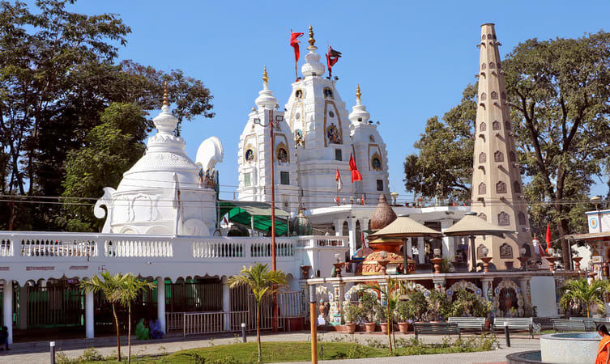

THINGS TO DO
Located on the banks of the Saraswati River, the city of Indore proves to be an ultimate destination to visit at least once in a lifetime. Let's look on some of the most wonderful places to enthral in IndoreRalamandal Wildlife Sanctuary
Established in the year 1981, Ralamandal Wildlife Sanctuary is one of the oldest wildlife sanctuaries in Madhya Pradesh which is a home to different species of animals and birds.
If you are a nature lover, you will find this place a paradise. With a wealth of plants such as bamboo, teak, eucalyptus, saja, and babool, it boasts a rich biodiversity. For exploring the insides area of the park, one can use a car or bike.
Distance from Sayaji Hotel : 17 km
Aprrox time to reach : 43 mins

Rajwada
Rajwada is subdivided into two major parts. One part of it is a temple and another part is a grand palace. Built by the Holkars of Maratha Dynasty, the Rajwada palace is a 7-storied structure situated in proximity to the Chhatris. The palace remains crowded by locals & outsiders throughout the year.The lush green garden at its entrance leaves the visitors mesmerized by its splendor. Cradled between the vibrant streets of Khajuri market, it faces an enticing garden which flaunts the statue of Ahilya Bai & numerous beautiful fountains.
Distance from Sayaji : 6 km
Aprrox time to reach : 32 mins

Khajrana Ganesh Temple
One of the most sought-after places to visit in Indore, Khajrana Ganesh temple was built by the Ahilyabai Holkar to safeguard the Lord Ganesh idol from Aurangzeb. The temple comprises a Ganesha statue & several smaller temples which are dedicated to the other deities.
The idol is composed of bricks, jaggery, limestone, mud, soil, and water. The intricate paintings inscribed on the upper sections of the Garbhagriha give a glimpse of different festivals that are celebrated in India. The nearby dargah of Nahar Sayed further adds to the religious aura of this tourist destination.
Distance from Sayaji : 4.8 km
Aprrox time to reach : 11 mins

Patalpani Waterfall
If you are looking for a scenic picnic spot in Indore, Patalpani Waterfall might put an end to your search. Situated 35 Km south-west from the Indore city, this place is a favorite weekend destination for travel junkies and one of the must-visit waterfalls in Indore.
The gushing waterfall falling from the height of 150 feet makes this place an ideal photography spot too. During the rainy season, the pristine beauty of this place multiplies & offers the most surreal views. Due to its connectivity to the cities such as Indore, Mhow, and Ujjain, it can be reached by train as well as the road.
Distance from Sayaji : 47 km
Aprrox time to reach : 1 Hour 07 mins

Pipliyapala
Also known as the Atal Bihari Vajpayee Regional Park, Pipliyapala is one of the best Indore tourist places and has been developed by IRDA. The park constitutes a canal which covers the entire park. The spectacular beauty of the mist fountains visible from the bridge over this canal takes you on a journey to peace.
Apart from this, there are many other attractions in the park including French Gardens, Musical Fountain, Boating, and Mist Fountain. You can also enjoy a ride in a speedboat, paddle boat, and tiny cruise called Malwa Queen and it is one of the best places in Indore for couples to spend some alone time.
Distance from Sayaji : 10 km
Aprrox time to reach : 25 mins